图形学渲染风格主要分为真实感渲染(Photorealistic rendering)和非真实感渲染(Non-photorealistic rendering，NPR)两大类。真实感渲染目的在于渲染出相片级别的画面真实感，而非真实感渲染的目的更加的多样，主要在于模拟艺术化的绘制风格，呈现出手绘的效果。常见的非真实渲染技术包括卡通渲染、油画渲染、像素感渲染、铅笔画、素描画、蜡笔画和水墨画等类型。其中，应用最广和研究最多的绘制类型就是卡通渲染(Cel Shading or Toon Shading)。我们接下来介绍几种常见、实用和好玩的非真实感渲染技术和技巧。
卡通渲染
卡通渲染是非真实感渲染领域应用最广的渲染技术，在游戏和影视领域非常的常见。卡通渲染在影视领域的主要代表作有《你的名字》；而游戏领域的代表作就非常多了，其中最出名的有Okami、崩坏3、塞尔达传说和军团要塞2等作品。下图是游戏Okami和塞尔达传说的实时卡通渲染画面。
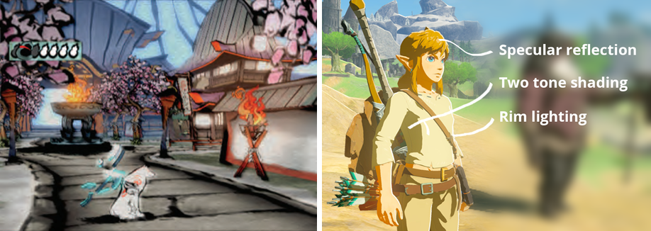
卡通渲染在游戏领域主要分为美式卡通风格和日式卡通风格两种。其中美式卡通色彩上比较连续，不会出现明显的色块分界线，主要代表作有军团要塞2；而日式卡通在着色方面会有明显的色块，色块的分界线清晰，主要代表作有崩坏3。从这些图片我们可以发现卡通渲染和真实感渲染有很多的不同，其中最大的不同在于描边处理和艺术化着色。我们下面分别从这两个方面来介绍卡通渲染。

描边
描边(Outline rendering)几乎是所有非真实感渲染都需要实现的效果，只不过不同的渲染风格有不同的描边细节。在Real-Time Rendering一书中将描边技术分为了以下五大类：基于法线和视角的描边( Shading Normal Contour Edges)、过程式的几何描边( Procedural Geometry Silhouetting)、基于图片处理的描边( Edge Detection by Image Processing)、基于轮廓线检测的描边( Geometric Contour Edge Detection)和混合以上几种描边方法(Hybrid Silhouetting)。其中，使用的最多的是基于法线和视角的描边、过程式几何描边和基于图片处理的描边三种方法。
- 基于法线和视角的描边
这种描边算法主要是使用视角方向和法线方向的点积结果float vdotn = dot(viewDir, normal来获取轮廓线的信息。通过观察我们容易发现，位于边缘的像素点与视角的夹角接近90°，而越远离边缘的像素点与视线的夹角越小。该描边方法既可以通过一个阈值参数_EdgeThred来控制轮廓线宽度，也可以通过一维纹理图来控制。该方法其实相当于使用一个环境贴图(Environment Map)来处理物体的表面。基于法线和视角的描边最大的优点就是简单、容易实现，只需要一个Pass就可以得到描边效果；缺点也非常的明显，从下图中我们可以明显看到描边的线条粗细差别很大，不容易控制，有较大的局限性。


- 过程式几何描边
过程式几何描边需要使用两个Pass来进行描边处理。在第一个Pass中只渲染背面的面片，用来实现描边的效果；然后第二个Pass中对模型进行正常的渲染。在第一个Pass进行描边处理时，我们利用顶点着色器将物体本身沿法线方向进行一定的扩展，得到一个比原来模型略大一些的模型来实现物体的轮廓可见的效果，这种方法一般被称为Shell method或者Halo method；除了这种方法外，还有Z-bias的描边方法，就是将顶点的Z值沿法线方向移动一个固定距离来实现描边，这种方法比较不可控，实现的效果较Shell method差很多。如果我们想实现轮廓宽度不一样的效果，可以利用顶点颜色来控制描边的细节，例如利用A通道来控制线条的粗细。

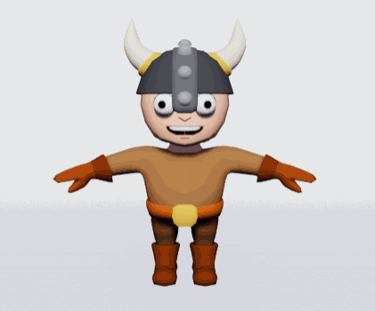
下图对比了Shell method和Z-bias两种方法实现后的效果。我们可以明显看出Z-bias在很多细节方面处理的非常一般，描边效果很差。
Shell method：
float4 viewPos = mul(UNITY_MATRIX_MV, i.vertex);
float3 normal = mul( (float3x3)UNITY_MATRIX_IT_MV, i.normal);
normal.z = -4.0;
viewPos = viewPos + float4(normalize(normal),0) * _Outline;
o.pos = mul(UNITY_MATRIX_P, viewPos);
Z-bias：
float4 viewPos = mul(UNITY_MATRIX_MV, i.vertex);
viewPos.z += _Outline;
o.pos = mul(UNITY_MATRIX_P, viewPos);

这里特别说下利用Shell method在顶点着色器沿法线方向扩展模型时可能遇到的问题。如果我们只是简单的进行扩展的话，有可能导致背面的面片沿法线进行扩展后的Z值比原先需要渲染的面片的Z值小，盖住前面需要渲染的面片，导致模型渲染出错，这种情况在凹模型容易出现，如下图模型的嘴巴。 我们需要对变换后的法线进行一个扁平化处理normal.z = -0.4;，让第一个Pass得到的模型轮廓成为一个平面。更多的细节可以参考UnityGems上面的这篇文章：Shader Part 6。

过程式几何描边优点是实现简单，可以得到轮廓均匀的描边效果，对大部分模型都有效。游戏Cel Damage里面使用的就是这种方法来实现模型的描边；同样该方法也有很多的缺点：无法用来描边棱角分明的模型，比如立方体；一般只能用来勾勒物体的外部轮廓(Silhouette)而无法绘制物体内部的轮廓(Contour)；需要处理双倍的Mesh数量，性能不友好。

我们这里对轮廓Silhouette和Contour这两个表述进行了简单的区分，中文翻译虽然都叫做轮廓，但是在Real-Time Rendering这本书里面认为Silhouette表达的是物体的外部轮廓；而Contour除了外部轮廓之外，还包括模型内部的各种线条细节，也就是说其实Silhouette是Contour的子集，下图给出了一个很好的区分。

- 基于图像处理的方法
基于图像的算法是通过图像处理的方法来进行边缘检测，一般用于屏幕空间的检测。我们通常使用深度、法线、亮度和颜色等属性作为边缘判断的依据。因此在进行处理之前，我们需要获取到场景对应的深度图和法线图，然后利用边缘检测算子进行边缘的判断。常见的边缘检测算子有：Sobel算子、Canny算子、Laplace算子、Robert算子和Prewitt算子。在延迟渲染非常流行的今天，我们一般可以直接在G-Buffer中直接获取到需要的深度信息和法线信息。基于图像处理的方法最大的好处就是适应性广，大部分的边缘检测都可以利用该方法；缺点就是如果没有G-Buffer，需要单独获取深度图和法线图，而且对于深度和法线变化很小的地方，可能无法检测出来，比如桌上的纸张。
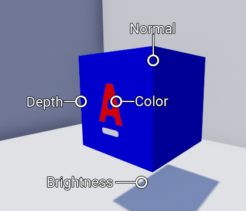
下图简单展示了利用深度图和法线图得到的边缘效果，然后将得到的这两个边缘图叠加在一起得到我们最终的效果。

透视投影经过透视除法后，得到的NDC坐标的深度值是非线性的，而我们通常需要使用线性深度值，也就是我们需要将投影后的深度值变换到线性空间中，通常是变换到观察空间。具体的数学推导可以参考这篇文章：OpenGL投影矩阵。Unity中提供了两个函数来完成该变换过程：LinearEyeDepth和Linear01Depth。LinearEyeDepth将投影后的深度值转换到观察空间，范围是[Near，Far]；而Linear01Depth得到的是范围为[0,1]的深度值。我们可以利用DecodeDepthNormal函数从_CameraDepthNormalsTexture中采样得到深度和法线图，得到的法线范围是[-1,1]，需要转换到[0,1]之间；也可以直接从_CameraDepthTexture中采样得到深度图，然后利用Linear01Depth转换到[0，1]。
DecodeDepthNormal(tex2D(_CameraDepthNormalsTexture, i.scrPos.xy), depthValue, normalValues);
fixed4 normalColor = fixed4(normalValues*0.5+0.5, 1);
depth = fixed4(depthValue, depthValue, depthValue, 1.0);
depth = SAMPLE_DEPTH_TEXTURE(_CameraDepthTexture, i.uv);
float linearDepth = Linear01Depth(depth);
return fixed4(linearDepth, linearDepth, linearDepth, 1.0);
inline void DecodeDepthNormal(float4 enc, out float depth, out float3 normal)
{
depth=DecodeFloatRG(enc.zw);
normal=DecodeViewNormalStereo(enc);
}
DecodeDepthNormal利用DecodeFloatRG和DecodeViewNormalStereo来单独解码深度和法线纹理信息。下图是我们对原图处理后得到的法线和深度信息。
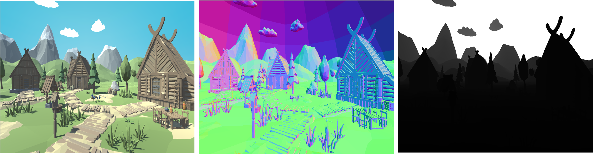

我们接下来利用Sobel算子来进行图片的边缘检测，下面三张图分别表示利用颜色信息、深度&法线信息和颜色&深度&法线信息得到的轮廓图。
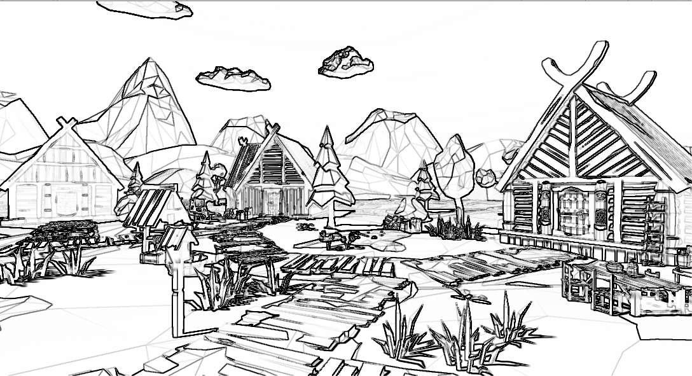
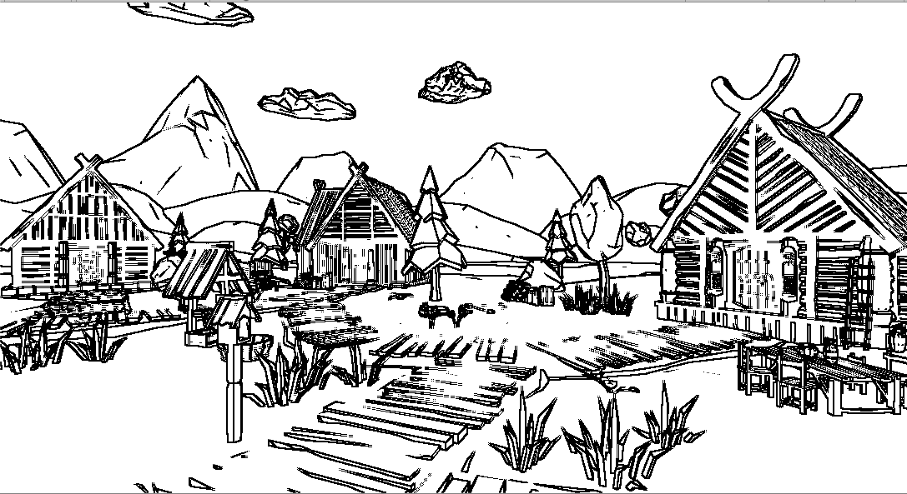
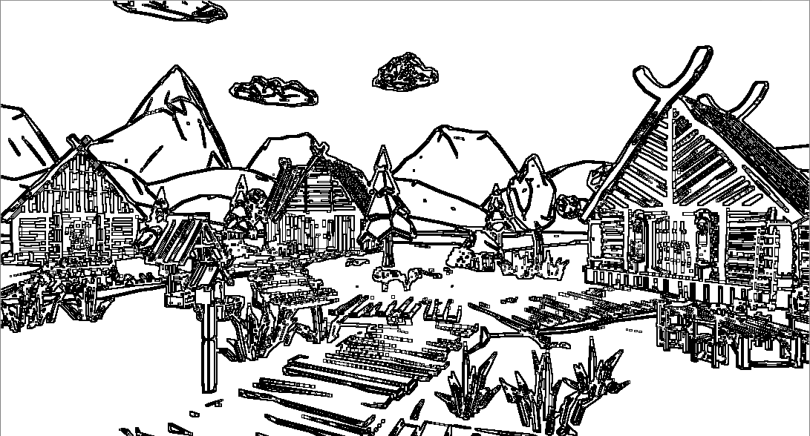
我们在原图的基础上分别叠加上面通过边缘检查算法得到的轮廓图，得到如下的效果。这里先加上颜色得到的描边图，然后是法线和深度。
分别加上color&depth&normal.gif
下图是原图和轮廓图切换的效果。
原图和描边的切换.gif
游戏Borderlands使用的就是基于图像的边缘检测算法来进行边缘处理，得到的效果图如下所示。我们上面主要介绍了基于法线和视角的描边、过程式几何描边和基于图像处理三种描边方法，其实除了这几种算法之外，还有很多其他的变种。每个算法都有自己的优点和不足，没有一个适合任何情况的算法，所以需要根据不同的应用场景选择不同的算法进行边缘的处理。

艺术化着色
卡通渲染的着色方式主要包括卡通着色(Cel Shading)和基于色调的着色(Tone Based Shading)两种。卡通渲染有一个很重要的特点就是色阶少，着色呈现块状感，这些效果都可以在着色方式中进行实现。这两种着色方式的主要区别在于色块的风格和色块的边界处理上，得到的效果会有较大的区别。
- 卡通着色

卡通着色一般会根据NdotL = dot(normal，lightDir)的结果指定不同的颜色值，来模拟卡通色块的着色效果；除了这种方法之外，更常见的处理方式是利用NdotL的结果从一维渐变纹理RampTexture中进行采样，下面展示了一些渐变纹理。


游戏罪恶装备中使用到了卡通着色的思想。

如果我们想模拟视角相关的效果，比如菲涅尔光照，那么我们需要从二维纹理中进行采样，除了前面的NdotL之外，还需要另一个分量NdotV = dot(normal, viewDir。军团要塞2中就是通过利用菲涅尔因子对高光进行了调节，保证了非常出色的画面效果。卡通着色最大的特点就是明暗对比强烈，有明显的交界线，在日式卡通渲染中得到广泛的应用，比如崩坏3。卡通着色由于色块之间颜色有突变，块状之间容易出现锯齿，需要进行抗锯齿处理。我们可以使用smoothsetp(-w, w, spec - threshold)来处理边缘的突变，其中w表示像素之间的导数值，可以通过CG函数fwidth获取。

跟传统的高光效果不同，卡通渲染会追求风格化的高光效果，比如棱角分明和形状各异的高光风格。Stylized Highlights for Cartoon Rendering and Animation这篇论文给出了几种有趣的卡通高光渲染，包括平移(Translation)、旋转(Rotation)、分割(Split)、有向性缩放(Directional Scaling)和方形化(Squaring)几种。这些光照的实现思想都是对Blinn-Phong模型中的Half向量做一些修改，然后根据法线和Half向量的点积结果改变高光的形状。


- 基于色调的着色
基于色调的着色是在A Non-Photorealistic Lighting Model for Automatic Technical Illustration这篇论文提出来的，它跟卡通着色最大的不同就是色阶是连续的，通过在冷暖两种色调间进行插值使得色阶渐进变化。根据NdotL的结果在冷色调和暖色调之间进行插值，作者在论文中使用蓝色来模拟冷色调，使用黄色来模拟暖色调，如下面的公式所示。


军团要塞2是卡通渲染领域的经典作品，他们在Illustrative Rendering in Team Fortress 2这篇著名的论文里面介绍了他们所使用的渲染技术。主要是将着色分成了View-Independent Lighting Terms和 View Dependent Lighting Terms两部分。所有这些光照都是逐像素进行计算的，而且大多数的材质信息包括法线、漫反射率、镜面反射部分和不同的遮罩都是从贴图进行采样的。
视角无关的项View-Independent Lighting Terms主要包括空间变化的平行光和修改过的朗伯光照部分。公式的第一部分用于计算环境光部分，通过像素的法线从Ambient cube中进行采样得到；第二部分是朗伯光照的变形，使用的是半朗伯光照模型，也就是alpha = beta = 0.5；而w()函数是Diffuse Warping函数，用于控制色块间的颜色的渐变效果，军团要塞2中的实现是从下面的贴图进行采样的。


利用Amient cube和Diffuse Warp得到的效果如下图的(d)所示，我们可以明显看到人物明暗的交界处有泛红的效果，就是Warp函数的作用，同时模拟了全局光照的效果，起到了非常棒的效果。关于公式的其他参数可以参考论文里面的说明。

视角相关的项View Dependent Lighting Terms主要包括传统的Phong高光模型和自定义的边缘光光照，如下所示。公式的左边计算Phong高光和边缘光效果，同时使用了菲涅尔因子对高光进行了调节，论文里面称为Multiple Phong Term，可以得到非常出色的高光效果； 公式的右边用于模拟环境光照效果。从下图中可以看到经过菲涅尔因子调整后的高光非常的柔和，没有过曝的情况出现，不会显得油腻。

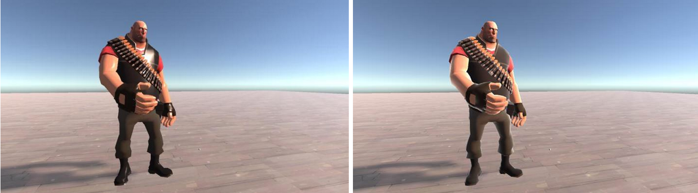
float3 halfVector = normalize(lightDir + viewDir);
float3 specBase = pow(saturate(dot(halfVector, s.Normal)), _SpecularPower);
float fresnel = 1.0 - dot(viewDir, halfVector);
fresnel = pow(fresnel, 5.0);
fresnel += _SpecularFresnel * (1.0 - fresnel);
通过叠加上漫反射分量、镜面高光、环境光和边缘光这些分量后我们得到的最终角色效果。

下面是通过使用卡通着色、描边和边缘光后得到的卡通效果。更多关于卡通渲染的技术可以参考崩坏3的技术分享：米哈游技术总监首次分享：移动端高品质卡通渲染的实现与优化方案。
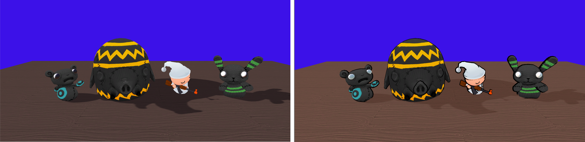
油画渲染
油画(OilPainting)是西方绘画的画中之一，主要特点是色彩丰富，笔触较为含蓄，不过多追求细节层次，同时需要具有明显的边缘效果。在图像处理方面，一般是通过像素周边的权重滤波来模拟油画的特点。该滤波算法的两个重要参数分别是：滤波半径Radius和灰度区间Bucket。其中，滤波半径用来决定参与计算的像素数，一般使用(Radius * 2 + 1） * (Radius * 2 + 1)的大小区域；而灰度区间用于散列各个灰度值的像素点，找到所有Buckets中像素最多的一个，将该Bucket中像素颜色的平均值作为该像素的颜色，灰度区间一般也称为散列桶。
该算法中，滤波半径Radius用于决定滤波的总体质量，也就是说Radius越大，得到的图片块状感更强，同时更加的耗时；而灰度区间Bucket用来决定图片的光滑度，也就是块状之间的光滑程度，我们一般将像素的灰度值(0~255)散列到Bucket个区间中，找出落入像素最多的Bucket。总的来说，该算法主要是下面三个步骤：1、图片灰度化；2、像素散列；3、统计结算。下图展示了该过程的几个阶段。

在实现中，分别使用NumberVector和ColorVector来记录落入某个区间的像素的数量和对应的颜色值，用于后续的计算统计，_Bucket用于表示所使用的区间的数量，_Radius用于表示过滤半径。
for(int i = 0; i <= _Radius; i++) {
for(int j = 0; j <= _Radius; j++) {
int BucketIndex = (int)((Luminance(col) * Bucket));
NumberVector[BucketIndex] += 1;
ColorVector[idx] += col;
}
}
散列完对应的像素后，我们接下来只需要统计各个Bucket中落入的像素的数量，找出数量最多的Bucket中所有像素的平均颜色值作为该像素的颜色。
int maxCount = -1;
int maxIndex = 0;
for(int k = 0; k < _Bucket; ++k){
if(NumberVector[k] > maxCount){
maxCount = NumberVector[k];
maxIndex = k;
}
}
fixed4 finalcolor;
finalcolor.rgb = ColorVector[maxIndex] / maxCount;
finalcolor.a = 1.0;
return finalcolor;
我们看到该算法在处理每个像素其实都需要对周边的(Radius * 2 + 1） * (Radius * 2 + 1)个像素进行滤波，所以我们应该尽可能减小Radius的大小；当Radius = 4时，我们需要对每个像素遍历81次，也就是说需要处理速度是原来的几十分之一，由此可见该算法的耗时。
下面展示了该算法实现的效果，我们这里使用分屏进行了展示，其中左边的显示的是原图，右边是处理过后的油画效果，这里的Radius = 10。
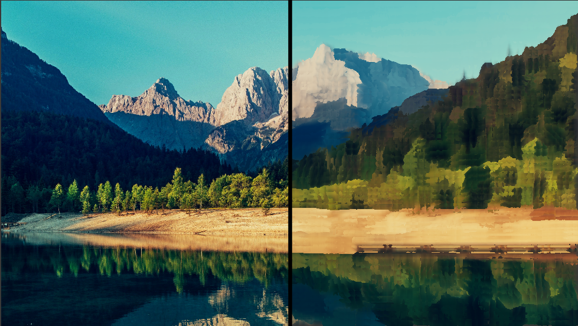
除了这种方法之外，还有另一种典型的实现方法，那就是利用Kuwahara滤波。Kuwahara滤波算法是数字图像处理领域非常常见的滤波方法，是一种非线性的平滑滤波器，我们通常会使用低通滤波器来降低图片的噪点，但是带来的一个问题就是会使得图片的边缘模糊了，如下图所示。通过使用方形滤波(Box Blur)虽然过滤掉白噪声，模糊了图片的同时也使得图片的边缘丢失了原有的锐度。我们接下来要介绍的Kuwahara滤波算法可以在平滑图像的同时保留图片边缘原有的性质。

Kuwahara滤波使用四个卷积核来分别统计像素的左上、左下、右上和右下四个方向的像素，下图展示了Kuwahara卷积核的运算过程，其中红点表示当前处理的像素点。统计的半径同样为Radius，每次统计的像素数量为(Radius + 1) * (Radius + 1)，统计四次，对应于上面提到的四个方向。在每个卷积核的统计过程中，我们需要记录每个块所对应的均值(mean)和方差(Variance)，通过这两个参数来衡量卷积核内颜色值的总体波动情况。对于有着相近颜色的卷积核，对应的方差波动较小，对于颜色相差较大的卷积核，方差差距较大。 由于图片的边缘颜色值差异都比较大，所以方差波动较大，因此我们在处理边缘像素点的时候会倾向于选择图片内侧或外侧的卷积颜色值，以此来保留边缘的效果，这就是Kuwahara滤波的原理。
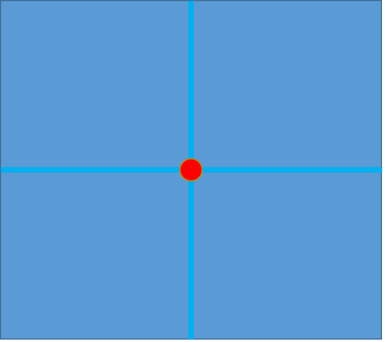
unreal-engine-paint-01.gif
在数据统计步骤中，我们会选取方差波动最小的卷积核最为当前的像素颜色，我们可以得到平滑过度图片的同时，保留图片原有的边缘效果。下面两种图分别给出了Kuwahara算法在处理图片边缘像素点时的运算过程。在第一个像素点的计算过程中，Kuwahara滤波最终会选择绿色方块的卷积核作为像素点的颜色值，因为该块的颜色值都是黑色的，方差波动最小；而第二个像素点最终会使用黄色方块的卷积核作为颜色值。
unreal-engine-paint-02.gif
unreal-engine-paint-03.gif
我们从右下角开始统计，然后利用offset数组来偏移计算其他三个方向的像素颜色值。我们这里其实默认使用的就是四个Bucket来进行统计，记录下各个Bucket的颜色值的均值和方差来统计卷积核的波动情况。我们使用了mean数组来记录均值，使用Variance数组来记录方差。
float2 offset[4] = {{-_Radius, -_Radius}, {-_Radius, 0}, {0, -_Radius}, {0, 0}};
for (int k = 0; k < 4; k++) {
for(int i = 0; i <= _Radius; i++) {
for(int j = 0; j <= _Radius; j++) {
pos = float2(i, j) + offset[k];
col = tex2Dlod(_MainTex, float4(uv + float2(pos.x * _MainTex_TexelSize.x, pos.y *_MainTex_TexelSize.y),0., 0.)).rgb;
mean[k] += col;
Variance[k] += col * col;
}
}
}
在上面统计后，我们利用mean数组和Variance数组的数据来统计四个卷积核的波动情况，记录总体波动最小的颜色值作为像素点的输出。

for (int k = 0; k < 4; k++) {
mean[k] /= n;
Variance[k] = abs(Variance[k] / n - mean[k] * mean[k]);
res = Variance[k].r + Variance[k].g + Variance[k].b;
if (res< min) {
min = res;
color.rgb = mean[k].rgb;
}
}
其实这两个算法最终实现的效果是差不多的，Shadertoy中油画的效果使用的就是利用Kuwahara算法来做的，不过我们发现该算法需要的遍历次数是4 * (Radius + 1) * (Radius + 1)，在计算量方面比我们上面介绍的算法要多一些。
下面是该算法得到的一些效果：
- 当Radius从0变化到10时的效果
这里需要用 从0到10变换.gif 图片
- 屏幕空间扫描效果
这里需要用 左右扫描.gif 图片
Kuwahara滤波算法由于卷积核朝向和像素局部朝向相同，也就是所谓的轴对齐卷积核(Axis-aligned Kernels)，这样的过滤方式可能会导致得到的图片有方形块状的感觉，一个解决方法就是使用有向性滤波(Directional Kuwahara Filter)和各向异性滤波(Anisotropic Kuwahara Filter)。
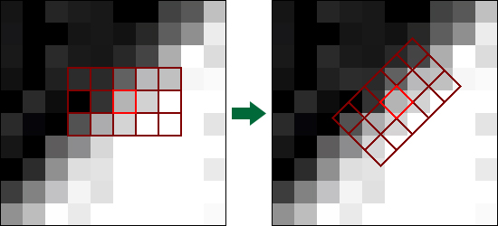
素描绘制
素描(Hatching)是非常流行的非真实渲染风格。现在素描算法大多都是基于Praun等人在2001年发表了一篇非常著名的论文 Real-Time Hatching。该论文描述了如何通过提前生成的素描纹理来实现实时的素描风格渲染，论文中将这组纹理成为色调艺术图(Tonal Art Map，TAM)，如下图所示。色调艺术图从左到右笔画逐渐增多，用来模拟物体漫反射的效果。同一列不同分辨率的纹理代表的是多级渐进纹理，用来更好的模拟远离摄像机的物体。TAM图间的笔触是有一定讲究的，我们发现右边纹理图笔触必须包含左边的笔触，如果没有遵循这个规则的话，得到的素描效果会非常奇怪。论文给出了自动生成TAM的方法，除了使用六张纹理图之外，我们可以对纹理图进行pack得到如下的两张RGB纹理图，RGB三个通道分别对应前三张和后三张纹理图的纹理信息。


不同的TAM笔触可以得到风格各异的素描效果，论文中给出六种不同的效果。

该效果最简单直接的实现就是根据diffuse在不同的TAM图中进行采样，然后混合得到最终的效果。这种实现最大的问题就是过多的动态分支操作会大幅度降低GPU的性能，所以一般是采样权重的方法来计算不同TAM图的比例。
half3 hatching = half3(0.0, 0.0, 0.0);
hatching += hatch0.r * weightsA.x;
hatching += hatch0.g * weightsA.y;
hatching += hatch0.b * weightsA.z;
hatching += hatch1.r * weightsB.x;
hatching += hatch1.g * weightsB.y;
hatching += hatch1.b * weightsB.z;
我们一般需要对权重进行一些处理，使得到的权重最多有两个非零的值，我们会通过插值来得到中间的其他值，所以我们需要消除数值较低的权重分量，保留权重最高的值来作为纹理采样；此外我们还需要保证得到的权重值weightsA和weightsB的和为1，一般可以通过下面的方法来处理得到的权重。

weights0.xy -= weights0.yz;
weights0.z -= weights1.x;
weights1.xy -= weights1.zy;
下面是经过素描处理后的效果。
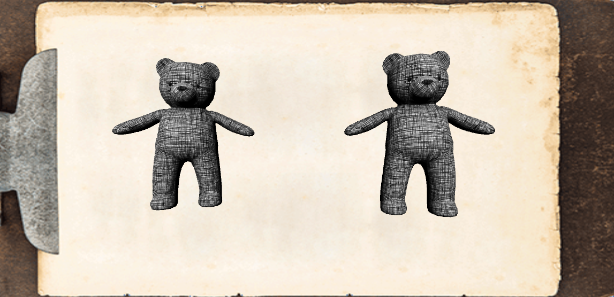
改变光照方向的效果。
灯光改变.gif
我们可以用类似的方法得到圆珠笔的效果。
ballpointpen.png
其他非真实感风格
非真实感渲染有一个非常重要的阶段就是描边，通过描边可以模拟某些手绘的效果，不同的描边方式可以呈现出不同的手绘风格，所以描边在非真实感渲染有着很重要的作用。我们可以通过多个Pass来进行叠加多次描边，每次都进行顶点的随机偏移来模拟手绘的感觉，我们这里使用的是前面介绍的过程式几何描边的方法来进行描边处理。这里简单的模拟水墨画和粉笔画两种笔触的效果。
- 水墨画
下面对比了进行一次常规描边和4次不规则描边的区别。
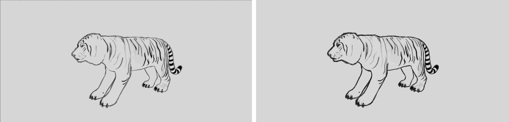
Inkpaint.gif
我们除了进行描边的不规则化处理之外，还对像素颜色进行了平滑的过渡、量化输出以及对比度的提升。不过得到的水墨画效果其实是比较一般的，水墨画在非真实感渲染想做好其实还是比较难的，非常难模拟水墨画的这种笔触，而且相关的论文研究的也不多。后处理实现水墨风格渲染「Low Poly 」变「水墨画 」、水墨风格渲染：如何优雅的画一只猴子、在Unity进行水墨风3D渲染的尝试这几篇文章虽然都对水墨画进行了模拟，但得到的效果其实都比较一般，而且这些方法不具备一般性，在不同模型或贴图下面得到的效果差别非常大。
- 粉笔画
下面是粉笔画描边的效果。
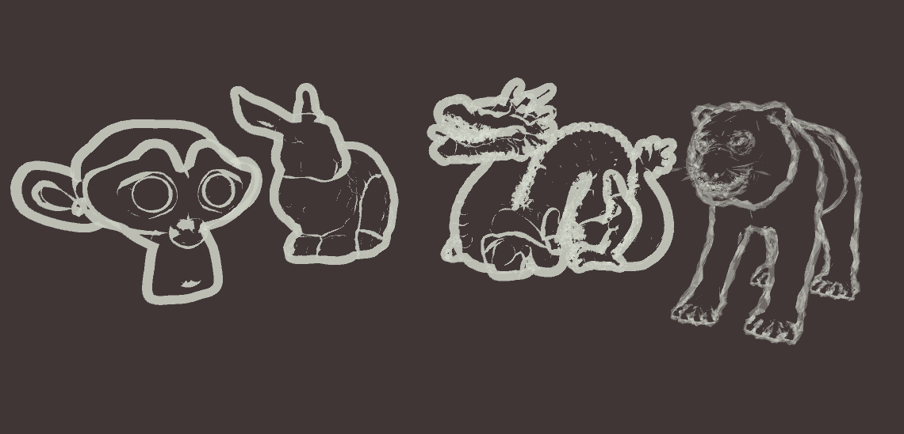
Reference
- Kuwahara filter
- Anisotropic Kuwahara Filtering
- Unreal Engine 4 Paint Filter Tutorial
- Adaptive Kuwahara filter
- 卡通渲染及其相关技术
- Real Time Rendering，4Th
- 移动端高品质卡通渲染的实现与优化方案
- Illustrative Rendering inTeam Fortress 2
- Unreal Engine 4 Toon Outlines Tutorial
- A Non-Photorealistic Lighting Model For Automatic Technical Illustration
- Stylized Highlightsfor CartoonRendering andAnimation
- Real-Time Hatching
- Non-Photorealistic Computer Graphics: Modeling, Rendering, and Animation
- Non-Photorealistic Rendering
- Stylized Rendering Techniques For Scalable Real-Time 3D Animation
- Non-Photorealistic rendering
- NPAR: Non-Photorealistic Animation and Rendering
- 关于非实感图形学或者风格化渲染有哪些好的书或者paper